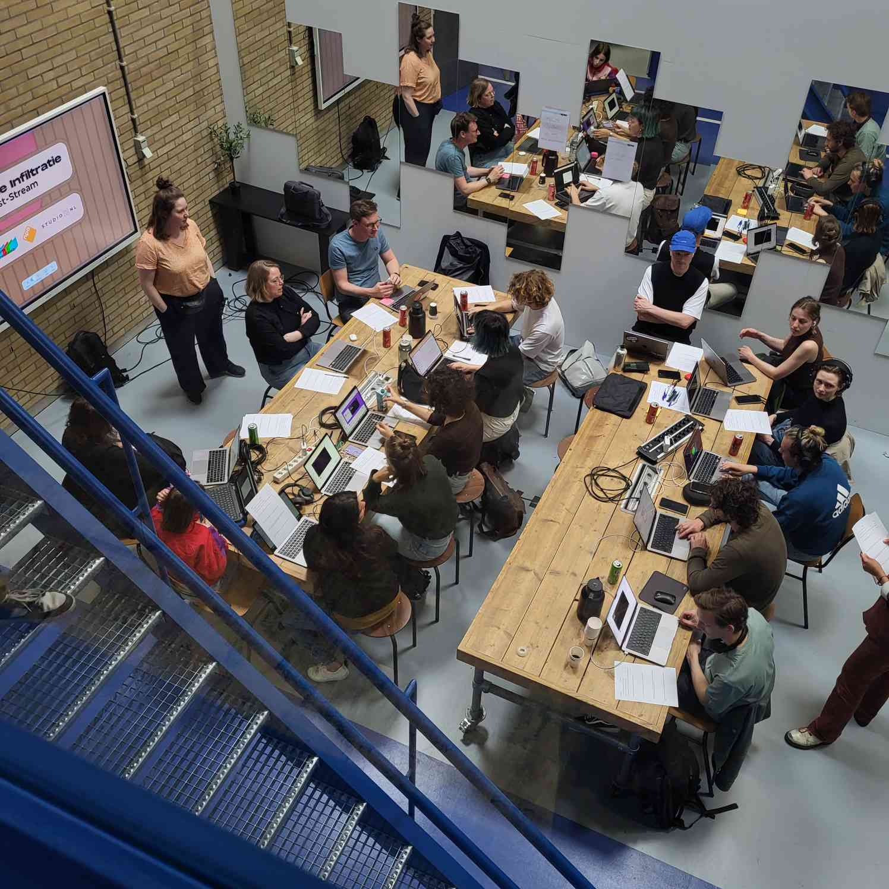

Operatie Infiltratie

The Project
This project was developed in Unreal Engine, primarily using Blueprints. Operatie Infiltratie was an interactive environment streamed live on Twitch. The goal of the project was to engage kids around the age of 13 and show them how they can influence political change in ways different from adults. We worked with a curved LED screen to display the background environment, while the foreground was rendered in-engine and streamed to Twitch. During the stream, the environment dynamically transformed from a dull office into a vibrant tropical forest.
My Part
I was the lead developer on this project, responsible for ensuring that all code was correctly implemented.
I also contributed directly by developing Unreal Blueprints to send commands via OSC to Unreal Engine.
Additionally, I worked on the mini-game mechanics, specifically the movement system and the timer functionality, while also assisting other developers throughout the project.
-
